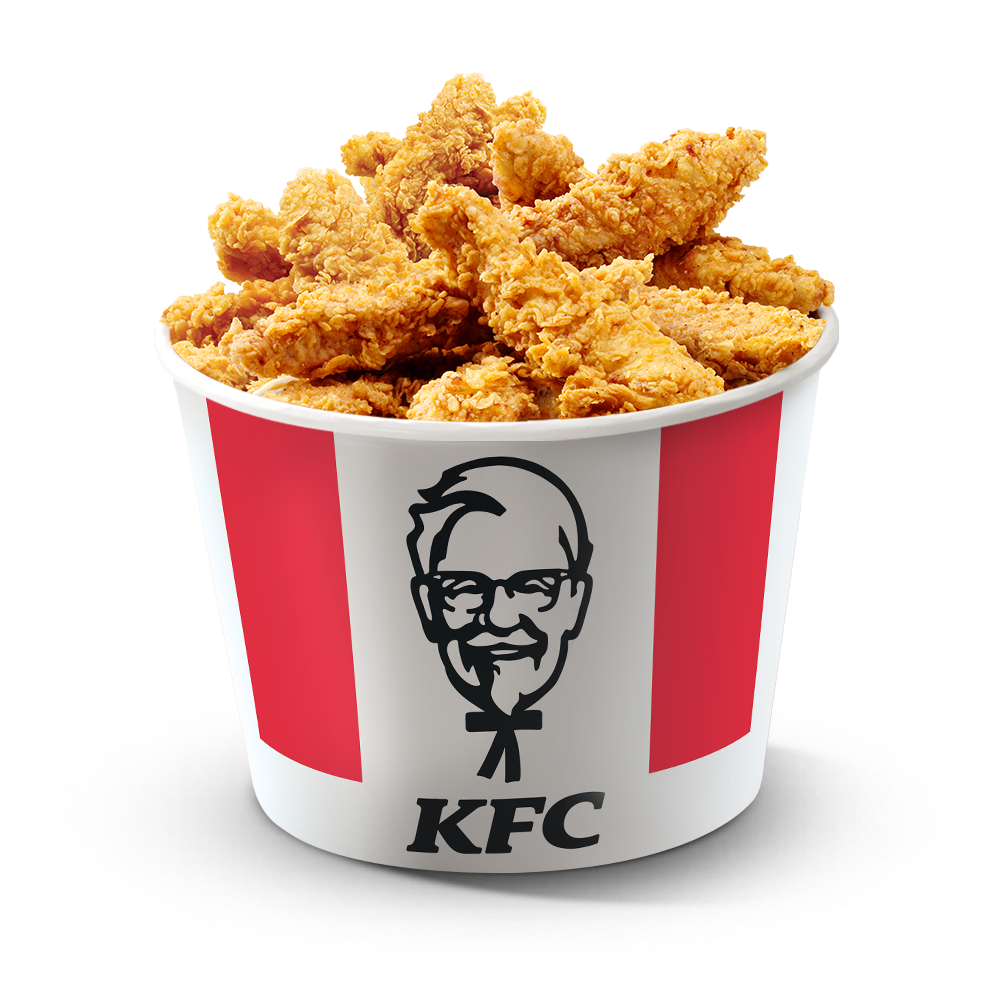

Полковник Харланд Дэвид Сандерс (9 сентября 1890 — 16 декабря 1980) — американский бизнесмен и основатель
сети ресторанов быстрого питания Kentucky Fried Chicken
Он начал продавать жареную курицу из своего придорожного ресторана в Северном Корбине, штат Кентукки, во время
Великой депрессии. За это время Сандерс
разработал свой «секретный рецепт» и запатентовал метод приготовления курицы во фритюрнице.
Фирменное блюдо KFC – это аппетитные кусочки курятины в панировке, включающей одиннадцать ароматных приправ и специй. Сандерс лично разработал уникальную смесь, которая на века останется оригинальным отличием кухни KFC . Долгое время кляр оставался коммерческой тайной, но сегодня известен каждый ингредиент, входящий в знаменитый рецепт «11 трав и специй». Копия рецептуры с подписью самого Сандерса хранится в сейфе главного офиса корпорации. Там же можно найти 11 флакончиков с оригинальными приправами, которые использовал полковник.
